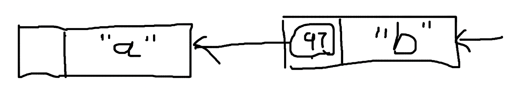

Serialization
序列化是编程中很常见的一种操作，主要用于把复杂格式的数据转化成易于在不同环境中统一处理的格式，类似于定义一种接口格式，便于网络传输。

把数据转换为统一的过程称为 serialization，从统一格式转换为特殊格式的过程为 deserialization。JSON stringify 的过程也可以认为是一种序列化：
let object = {
field1: "abc",
field2: 123
}
let str = JSON.stringify(object)
print(str) // {"field1":"abc","field2":123}
Serialization + CHF
可以明确的是，JSON stringify 的结果是一个字符串，这个时候就可以和之前的 cryptographic hash function 结合起来用了：
md5(str) = d79152b724c5f1e52e6bd4bfaf6e1532
只要定义过数据的 serialization 方法，我们就可以得到任意数据格式的 hash values。
Serialization + CHF + Linked List
Linked list 之间的关联关系常用变量的引用地址表示，但指针不是惟一的方式，数据结构的含义也可以扩展到更大的范围。我们完全可以用节点数据的 hash values 作为关联：

98 是 b 的 hash values，表明值为 a 的节点，下一个节点的 hash values 为 98，也就是值为 b 的节点。
我们也可有使用反向的 linked-list：

a 的 hash values 是 97，表明值为 b 的节点，上一个节点的 hash values 为 97。
当然，这里的值可以是更复杂的数据结构，只要定义好 serialization 格式，也可以应用到更复杂的 hash function 上，比如这样正向的 linked-list：
type Node struct {
Value int
Next string
}
node1 = Node{ Value: "a" }
node1_str = JSON.stringify(node1) // { "Value": "a" }
node1_hash = md5(node1_str) // 9ad06e8a44d0daf821f110794fb012c7
node1.Next = node1_hash
这就构建好了一个节点，以此类推。
另一种也许更好或者更适用于某种特定场景的形式是，将其改为反向的 linked-list：
type Node struct {
Prev string
Value int
}
node1 = Node{ Value: "a" }
node1_str = JSON.stringify(node1) // { "Value": "a" }
node1_hash = md5(node1_str) // 9ad06e8a44d0daf821f110794fb012c7
node2 = Node{ Value: "b" }
node2_str = JSON.stringify(node2) // { "Value": "b" }
node2_hash = md5(node2_str) // 7e332b78dbaac93a818a6ab639f5a71b
node2.Prev = node1_hash
这种反向的 linked-list 就是区块链的基础数据结构。